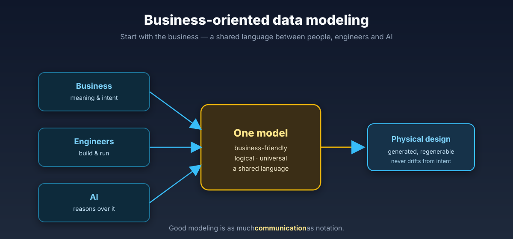

Expertise · Data modeling
Most modeling debates are about method. Mine starts with the business: what does this data mean, and how does it change over time? From there I choose — dimensional, ensemble, 3NF, bi-temporal — the shape that fits, not the one the methodology demands.

The ideas behind it
An integration layer that sits between Kimball simplicity and Data Vault auditability - 3NF plus SCD2, shaped around business meaning, readable by the people who actually own the data.
Transaction time plus valid time gives a full, reproducible audit trail - better than classical SCD2 for modern platforms where you must answer: what did we know, and when?
Kimball did not go away - dimensional thinking still shapes how analytics layers should look. I fold those lessons into a metadata-first approach instead of treating them as legacy.
Ensemble modeling (Hultgren) is brilliant; business-oriented modeling is often simpler without the ensemble complexity. Both are valid - the choice is pragmatic, not tribal.
From the writing
That is the question I love — let us start from what the business means and work down to the model.
Start a conversation